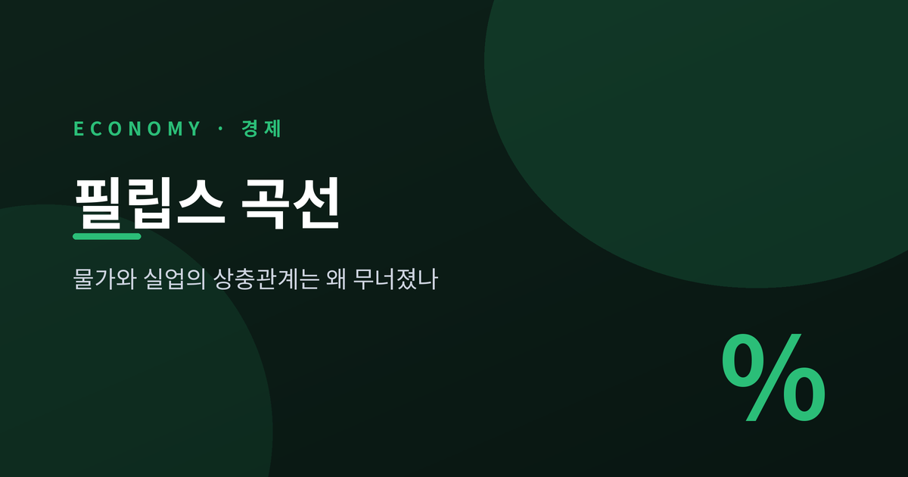
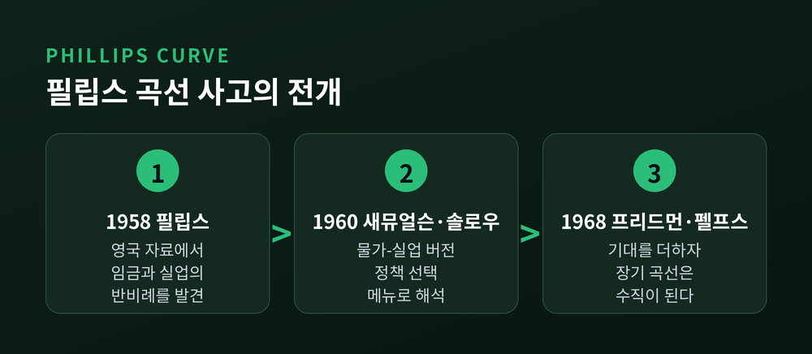
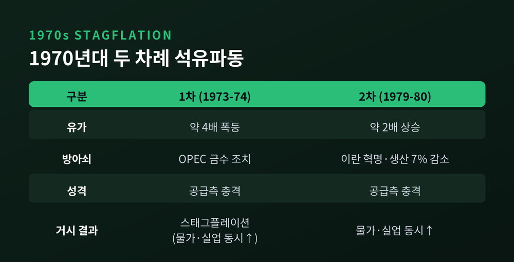
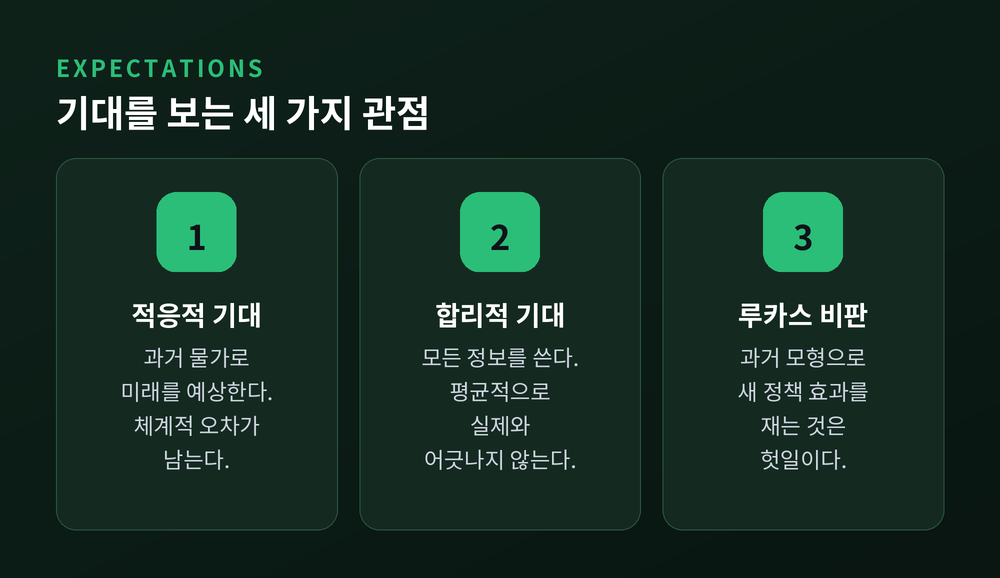
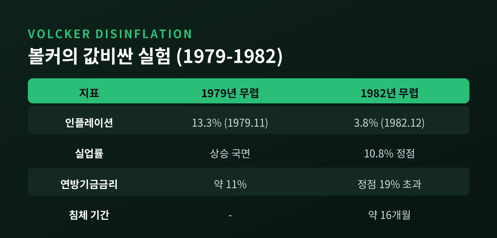
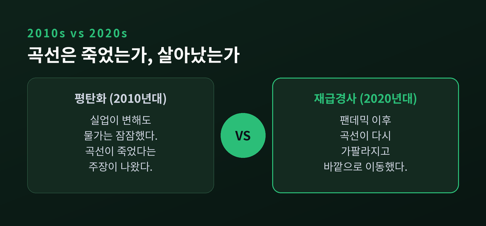

물가가 오르면 실업이 줄어든다는 오래된 믿음이 있었습니다. 그 믿음의 이름이 바로 필립스 곡선입니다. 이 글에서는 필립스 곡선이 어디서 왔고, 왜 한때 무너졌으며, 오늘날 어떻게 다시 논쟁의 한복판에 섰는지 차근히 정리해 보겠습니다.

시작은 한 편의 논문이었습니다.
1958년, 뉴질랜드 출신 경제학자 A.W. 필립스가 영국의 1861년부터 1957년까지 자료를 뜯어봤습니다. 그가 본 것은 실업률과 명목 임금 상승률의 관계였습니다.
패턴은 뚜렷했습니다. 실업률이 높을 때는 임금이 천천히 올랐고, 실업률이 낮을 때는 임금이 빠르게 올랐습니다. 둘은 반대 방향으로 움직였습니다.
필립스의 설명은 상식에 가까웠습니다. 실업률이 낮으면 노동시장이 빡빡해집니다. 사람을 구하기 어려워지니, 기업은 부족한 일손을 붙잡으려 임금을 더 빨리 올려야 합니다.
여기서 한 가지는 짚고 넘어가야 합니다. 오늘날 우리는 필립스 곡선을 "물가와 실업"의 관계로 부르지만, 필립스가 처음 그린 것은 "임금과 실업"이었습니다.

곡선에 이름을 붙인 사람은 필립스가 아니었습니다.
1960년, 폴 새뮤얼슨과 로버트 솔로우가 "필립스 곡선"이라는 용어를 처음 썼습니다. 이들은 임금 대신 물가 상승률을 실업률과 짝지었습니다. 미국의 1934년부터 1958년까지 자료에서도 둘은 음의 관계를 보였습니다.
두 사람의 진짜 기여는 해석에 있었습니다. 이들은 필립스 곡선을 "실업과 물가안정 사이의 선택 메뉴"로 봤습니다. 정책 당국이 곡선 위에서 가장 나은 점을 골라 경제를 미세하게 조정할 수 있다는 발상이었습니다.
시점도 절묘했습니다. 1960~61년은 경기침체기였습니다. 인플레이션을 조금 감수하고 실업을 낮추자는 제안은 매력적으로 들렸습니다.
다만 흔히 잊히는 대목이 있습니다. 새뮤얼슨과 솔로우 자신은 이 분석이 단기에 관한 것이며, 장기에는 곡선의 모양이 바뀌거나 곡선 자체가 움직일 수 있다고 경고했습니다. 그러나 1960년대에 그 경고는 대체로 무시되었습니다.
“실업과 물가안정 사이에서 원하는 점을 고른다.”
문제는 예상보다 빨리 찾아왔습니다.
1970년대에 스태그플레이션이 나타났습니다. 경기침체와 인플레이션이 동시에 벌어지는 현상입니다. 물가가 오르면 실업이 줄어야 하는데, 물가와 실업이 함께 치솟았습니다.
방아쇠는 석유였습니다. 1973~74년 1차 석유파동에서 OPEC의 금수 조치로 유가가 네 배로 뛰었습니다. 1979년 이란 혁명이 부른 2차 석유파동에서는 세계 석유 생산이 7% 줄고, 1979~80년 사이 유가가 두 배가 되었습니다.
공급 쪽에서 온 충격이었습니다. 유가 급등은 생산비를 밀어올려 물가를 높이는 동시에 생산과 고용을 짓눌렀습니다. 단순한 우하향 곡선으로는 도무지 설명할 수 없는 그림이었습니다.
이 혼란 속에서 새 개념이 등장했습니다. NAIRU, 곧 인플레이션을 가속시키지 않는 실업률입니다. 단순 필립스 곡선을 대신하는 자리에 들어섰습니다.

사실 붕괴는 예고되어 있었습니다.
곡선이 무너지기 전, 밀턴 프리드먼과 에드먼드 펠프스가 1967~68년에 이미 반론을 내놓았습니다. 프리드먼은 1967년 미국경제학회 회장 연설에서, 펠프스는 1967년 논문에서 각자 비슷한 결론에 이르렀습니다.
핵심은 하나였습니다. 노동자는 명목임금이 아니라 실질임금에 관심을 둔다.
인플레이션이 예상 밖으로 오르면, 노동자는 명목임금이 오른 것을 실질임금이 오른 것으로 착각합니다. 이른바 화폐환상입니다. 그래서 일시적으로 고용이 늘어납니다. 하지만 사람들이 물가 상승을 알아채고 기대를 조정하는 순간, 그 효과는 사라집니다.
여기서 기대 부가 필립스 곡선이 나옵니다. 인플레이션 기대가 곡선에 반영되면, 실업은 결국 시장이 정하는 자연실업률로 돌아갑니다.
결론은 단호했습니다. 장기 필립스 곡선은 수직입니다. 장기에는 어떤 인플레이션율이든 자연실업률과 양립합니다. 즉, 오래 보면 물가와 실업의 상충관계는 없습니다.
여기서 '기대'라는 말의 무게가 커집니다.
프리드먼과 펠프스는 적응적 기대를 가정했습니다. 미래 물가를 과거의 물가에 기대어 예상한다는 것입니다. 이 경우 예측에는 체계적인 오차가 남습니다.
로버트 루카스는 여기서 한 발 더 나갔습니다. 그는 합리적 기대를 내세웠습니다. 사람들은 가용한 모든 정보를 써서 예측하고, 그 예측은 평균적으로 실제 경제와 어긋나지 않는다는 관점입니다.
이 관점은 정책에 뼈아픈 질문을 던졌습니다. 이른바 루카스 비판입니다. 과거 자료로 맞춰둔 모형으로 새 정책의 효과를 계산하는 것은 헛일이라는 지적입니다. 사람들이 정책 변화에 맞춰 행동을 바꾸기 때문입니다.
루카스는 1972년, 합리적 기대로 단기에는 우하향하고 장기에는 수직인 필립스 곡선을 이론적으로 깔끔하게 이끌어냈습니다. 예상 가능한 인플레이션 변화로는 실업을 줄일 수 없다는 결론이었습니다.
오늘날 표준이 된 뉴케인지언 필립스 곡선은 이 흐름 위에 서 있습니다. 현재의 인플레이션을 기대 미래 인플레이션과 실질 비용에 연결하고, 가격과 임금의 경직성을 함께 담았습니다.

이론은 곧 현실에서 시험대에 올랐습니다.
1979년, 폴 볼커가 연준을 맡았습니다. 그는 인플레이션을 잡기 위해 금리를 끌어올렸습니다. 연방기금금리는 취임 무렵 약 11%에서 1980년 4월 약 18%로, 정점에서는 19%를 넘었습니다.
결과는 극적이면서 고통스러웠습니다. 인플레이션은 1979년 11월 13.3%에서 1982년 12월 3.8%로 떨어졌습니다. 통화 역사에서 손꼽히는 디스인플레이션입니다. 그러나 대가로 실업률은 10.8%까지 치솟았고, 16개월의 침체가 이어졌습니다.
주목할 점은 그 방식입니다. 볼커가 물가를 꺾은 힘은 단순히 높은 금리 자체가 아니었습니다. 연준이 전례 없는 침체까지 감수하겠다는 신뢰를 시장에 보여준 것이 결정적이었습니다.
자연실업률 가설이 예측한 대로, 실업이 높아지자 인플레이션은 내려왔습니다. 다만 1970년대에는 실업률이 5.7~7.8% 수준이었는데도 물가가 올라, 고인플레이션 기대가 스스로를 실현하는 장면도 함께 관찰되었습니다.

논쟁은 지금도 진행형입니다.
2010년대 들어 필립스 곡선은 눈에 띄게 평탄해졌습니다. 실업이 오르내려도 물가가 좀처럼 반응하지 않았습니다. 일부에서는 "필립스 곡선은 죽었다"고까지 말했습니다. 2019년 연준 부의장 리처드 클라리다도 곡선의 평탄화를 정책 재검토의 핵심으로 꼽았습니다.
반론도 만만치 않았습니다. 곡선이 죽은 것이 아니라, 저물가 국면에서 곡선의 평탄한 구간에 머물렀을 뿐이라는 것입니다. 이른바 비선형 해석입니다.
그리고 코로나 이후, 판이 다시 흔들렸습니다. 2021~23년 여러 연구는 필립스 곡선이 다시 가팔라졌다고 봤습니다. 미국, 영국, 프랑스, 유로존에서 회복기의 곡선이 유의하게 가팔라졌습니다.
다만 그 경사만으로는 2021~22년의 인플레이션 급등을 다 설명하지 못했습니다. 곡선 자체가 바깥으로 이동한 몫이 컸습니다. 탈세계화로 물가가 국내 여건에 다시 민감해지고, 인플레이션이 커지며 기대가 고정에서 풀린 것도 영향을 줬습니다.
예전엔 물가와 실업이 얌전히 반비례했습니다. 지금은 그 관계가 상황에 따라 나타났다 숨었다 합니다.

정리하면 이렇습니다.
필립스 곡선은 죽지도, 완전히 살아있지도 않습니다. 단기에는 물가와 실업이 서로 밀고 당기지만, 장기에는 그 상충관계가 흐려집니다. 그리고 그 사이를 잇는 열쇠는 결국 사람들의 기대였습니다.
"곡선을 움직인 것은 방정식이 아니라, 미래를 내다보는 사람들의 마음이었습니다."
물가와 실업은 정말 반비례하느냐고 물으신다면, 이렇게 답하겠습니다. 짧게 보면 그렇고, 길게 보면 아니며, 무엇을 기대하느냐에 따라 그 답은 또 달라진다고 말입니다.